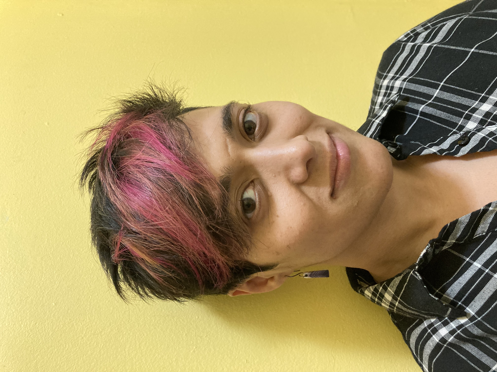
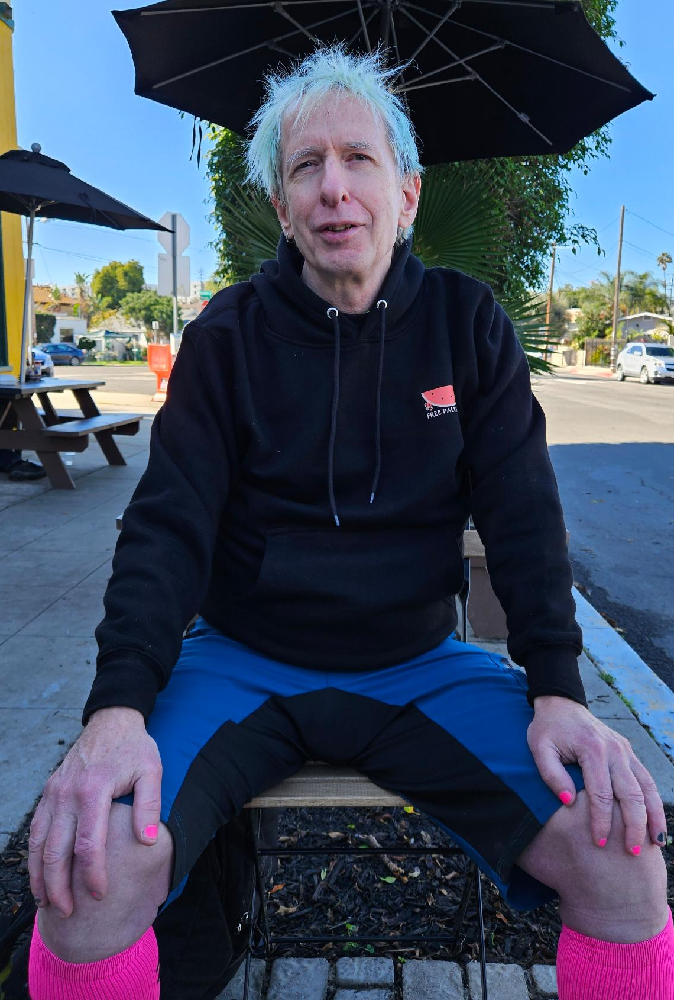
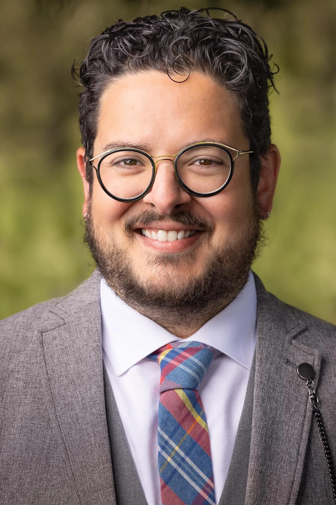

Current Residents
Our current resident cohort brings together critical thinkers working on ancestral repatriation, complex systems physics, border abolition, and more-than-human resistance.

Dr. Lyra D. Monteiro, Scholar-in-Residence 2024–2026.
Dr. Lyra D. Monteiro
Scholar-in-Residence • 2024–2026
Dr. Lyra D. Monteiro (she/zie) is a scholar, artist, and organizer whose work focuses on the uses of the past in public culture. Her interdisciplinary training includes Classics and Anthropology (NYU), Latin and Classical Art & Archaeology (University of Michigan, Ann Arbor), and a PhD in Public Humanities from Brown University's Joukowsky Institute for Archaeology and the Ancient World. Dr. Monteiro directs The Museum On Site, a public arts and humanities initiative, and is Co-Convener of Finding Ceremony, a descendant-led process for the return of ancestral remains, with West Philadelphia writer and organizer aAliy Muhammad.
Residency Focus: UnCollect Our Ancestors
Dr. Monteiro's residency at the Regeneración Lab centers on completing her forthcoming book, UnCollect Our Ancestors: Finding Ceremony and the Descendant Community Struggle for the Return of the Penn Museum's Morton Cranial Collection (under advance contract at Penn Press). The book centers descendants of the 1,300 ancestors stolen by racial science pioneer Samuel George Morton, developing institutional return models with Community Editors representing impacted descendant communities.

B.T. Werner, Scholar-in-Residence 2025–2026.
B.T. Werner
Scholar-in-Residence • 2025–2026
BT Werner is a physicist subversively embedded in the academic-industrial complex. BT is Professor of Environmental Physics and Complex Systems, teaching professor in Critical Gender Studies, and faculty affiliate in Ethnic Studies and the Labor Center at UCSD. Werner conducts transdisciplinary research investigating the ways resistance movements affect relationships between human societies and the More-Than-Human World. Werner is also the 2025–2026 scholar-in-residence with the Literature and Environment research center at UCSB.
Active Lab Projects
- Literature & Environment Reading Group: Critical Temporalities and colonial climate fractures.
- Dynamics of Colonial Encounters: Non-linear models of territorial resistance and resource extraction.
- Forthcoming Book Project: The Physics of Earth's Resistance: Climate Change as a Manifestation of the More Than Human World's Struggle Against Exploitation.
- Dynamics of Genocide: Mathematical and spatial modeling of systemic displacement and resistance.
Past Residents & Fellows
Since our founding, the Regeneración Lab has hosted resident scholars, poets, and organizers whose work has yielded books, public humanities installations, and movement syllabi.

Dr. Omar Zahzah, Scholar & Poet in Residence 2022–2023.
Dr. Omar Zahzah
Scholar, Poet • Residency 2022–2023
Omar Zahzah is an Assistant Professor of Arab, Muslim, Ethnicities and Diaspora Studies (AMED) in the Department of Race and Resistance Studies (RRS) at San Francisco State University. Dr. Zahzah is a scholar-activist, freelance journalist, and critical-creative writer of Lebanese Palestinian descent whose work focuses on abolition, settler colonialism, and transnational poetics. His journalism appears regularly in The Electronic Intifada, Mondoweiss, The Nation, and In These Times.
Residency Outcomes & Publications
During his residency, Dr. Zahzah completed and published his experimental novella DEATH through Swallow::tale press, exploring collective and individual mourning. He also developed his major book, Terms of Servitude: Zionism, Silicon Valley, and Digital Settler Colonialism in the Palestinian Liberation Struggle, published by The Censored Press in partnership with Seven Stories Press (2025).
Diné musician, artist, and activist with Indigenous Action, Haul No!, and Diné No Nukes. Developed foundational research justice framework connecting Indigenous anarchism to direct land defense.
Diné activist and co-founder of Diné No Nukes. Focused on uranium mining resistance, radiation exposure accountability, and environmental racism on Indigenous territories.
Created open-access bilingual curriculum materials and community seed-saving workshops examining Indigenous food sovereignty across the US-Mexico borderlands.
Archival translation project bringing Diné philosophy and traditional clan governance into direct dialogue with anti-authoritarian mutual aid practices.
Apply for Residency
Regeneración Lab offers 3 to 12 month non-paid residencies for artists, activists, and scholars engaged in research justice initiatives and critical-creative praxis. Residencies may be undertaken in-person in Santa Barbara, CA or remotely.
Space & Campus Access
In-person residents receive desk space and computer facilities at UC Santa Barbara within walking distance to the beach, along with full academic library and archival privileges.
Grant & Project Hosting
We provide academic hosting, project development mentorship, and grant writing collaboration for projects in need of institutional infrastructure.
Rolling Review Cycles
Applications are reviewed each spring between April and June for the upcoming academic year. Applications received after June 15 are reviewed on a rolling basis.
Thank you for your residency application. Your proposal has been submitted to the Regeneración Lab selection committee.